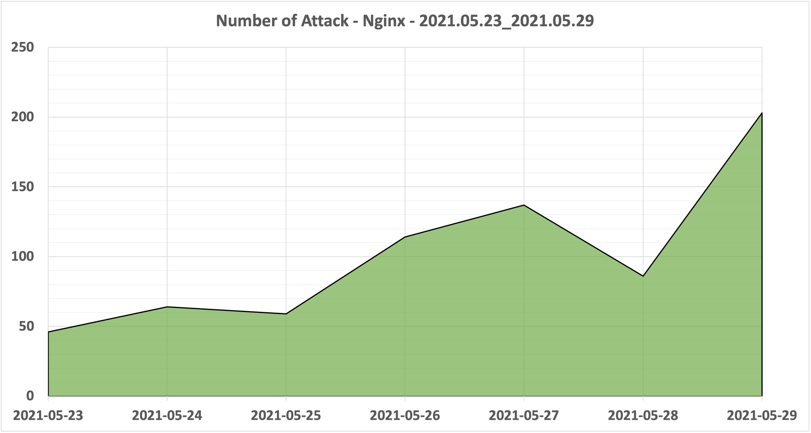
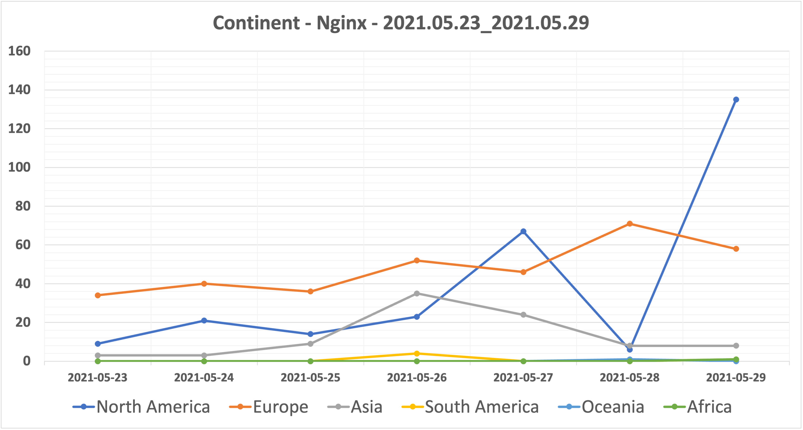

期間
2021.05.23 - 2021.05.29
環境
アプリケーション : Nginx
プラットフォーム : Vultr
場所 : 東京
サーバー台数 : 1台
検知件数
期間中の検知件数の合計は709回になります。

ユーザーエージェント
検知件数が10回以上のユーザーエージェントを記載しています。
| Number of Attack | User Agent |
|---|---|
| 198 | Mozilla/5.0 (Windows NT 10.0; Win64; x64) AppleWebKit/537.36 (KHTML, like Gecko) Chrome/78.0.3904.108 Safari/537.36 |
| 146 | Mozilla/5.0 (Windows NT 10.0; Win64; x64) AppleWebKit/537.36 (KHTML, like Gecko) Chrome/77.0.3865.120 Safari/537.36 |
| 27 | Mozilla/5.0 (X11; Ubuntu; Linux x86_64; rv:62.0) Gecko/20100101 Firefox/62.0 |
| 26 | Mozilla/5.0 zgrab/0.x |
| 24 | Mozilla/5.0 (X11; Linux x86_64) AppleWebKit/537.36 (KHTML, like Gecko) Chrome/81.0.4044.129 Safari/537.36 |
| 21 | Mozilla/5.0 (Windows NT 10.0; Win64; x64) AppleWebKit/537.36 (KHTML, like Gecko) Chrome/74.0.3729.169 Safari/537.36 |
| 18 | Mozilla/5.0 (Windows NT 10.0; Win64; x64) AppleWebKit/537.36 (KHTML, like Gecko) Chrome/90.0.4430.85 Safari/537.36 |
| 17 | Mozilla/5.0 (Windows NT 10.0; Win64; x64) AppleWebKit/537.36 (KHTML, like Gecko) Chrome/89.0.4389.114 Safari/537.36 |
| 16 | Mozilla/5.0 (Windows NT 6.1; WOW64) AppleWebKit/537.36 (KHTML, like Gecko) Chrome/29.0.1547.62 Safari/537.36 |
接続元IPアドレス
検知件数が10回以上のIPアドレスを記載しています。
| Number of Attack | IP Address | # | # | # |
|---|---|---|---|---|
| 180 | 45.146.164[.]125 | VirusTotal | urlscan | AbuseIPDB |
| 122 | 34.220.107[.]44 | VirusTotal | urlscan | AbuseIPDB |
| 24 | 64.225.5[.]26 | VirusTotal | urlscan | AbuseIPDB |
| 19 | 144.217.190[.]196 | VirusTotal | urlscan | AbuseIPDB |
| 19 | 103.133.110[.]78 | VirusTotal | urlscan | AbuseIPDB |
| 18 | 45.129.137[.]249 | VirusTotal | urlscan | AbuseIPDB |
| 16 | 47.241.193[.]60 | VirusTotal | urlscan | AbuseIPDB |
| 16 | 159.65.239[.]34 | VirusTotal | urlscan | AbuseIPDB |
| 12 | 13.233.73[.]212 | VirusTotal | urlscan | AbuseIPDB |
地域
接続元IPアドレスから地域の特定は、IP Geolocation API を使用しています。

| Number of Attack | Continent |
|---|---|
| 337 | Europe |
| 275 | North America |
| 90 | Asia |
| 5 | South America |
| 1 | Oceania |
| 1 | Africa |
国名
検知件数が10回以上の国名を記載しています。
接続元IPアドレスから国名の特定は、IP Geolocation API を使用しています。
| Number of Attack | Country |
|---|---|
| 250 | United States |
| 191 | Russia |
| 51 | Netherlands |
| 41 | Germany |
| 25 | Canada |
| 22 | Singapore |
| 21 | India |
| 19 | Vietnam |
| 16 | United Kingdom |
| 15 | Republic of Korea |
インターネット・サービス・プロバイダ
検知件数が10回以上のISPを記載しています。
接続元IPアドレスからISPの特定は、IP Geolocation API を使用しています。
| Number of Attack | Internet Service Provider |
|---|---|
| 180 | OOO "Network of data-centers "Selectel" |
| 139 | Amazon.com, Inc. |
| 94 | DigitalOcean, LLC |
| 33 | Amazon Technologies Inc. |
| 22 | Deutsche Telekom AG |
| 20 | OVH Hosting |
| 19 | Vietnam Posts and Telecommunications Group |
| 18 | Linode, LLC |
| 18 | Alviva Holding Limited |
| 16 | Alibaba.com LLC |
| 11 | FranTech Solutions |
リクエスト
検知件数が10回以上のリクエストを記載しています。
| Number of Attack | Request |
|---|---|
| 35 | GET /wp-login.php HTTP/1.1 |
| 31 | GET /.env HTTP/1.1 |
| 18 | POST /vendor/phpunit/phpunit/src/Util/PHP/eval-stdin.php HTTP/1.1 |
| 18 | POST /Autodiscover/Autodiscover.xml HTTP/1.1 |
| 18 | POST /api/jsonws/invoke HTTP/1.1 |
| 18 | GET /wp-content/plugins/wp-file-manager/readme.txt HTTP/1.1 |
| 18 | GET /vendor/phpunit/phpunit/src/Util/PHP/eval-stdin.php HTTP/1.1 |
| 18 | GET /index.php?s=/Index/\think\app/invokefunction&function=call_user_func_array&vars[0]=md5&vars[1][]=HelloThinkPHP21 HTTP/1.1 |
| 18 | GET /_ignition/execute-solution HTTP/1.1 |
| 18 | GET /console/ HTTP/1.1 |
| 10 | GET /wp/wp-login.php HTTP/1.1 |
| 10 | GET /wordpress/wp-login.php HTTP/1.1 |
| 10 | GET /blog/wp-login.php HTTP/1.1 |
ログ
https://raw.githubusercontent.com/blackle0pard/HoneypotData/main/nginx/2021/2021-05/nginx_errorlog_20210523.json
https://raw.githubusercontent.com/blackle0pard/HoneypotData/main/nginx/2021/2021-05/nginx_errorlog_20210524.json
https://raw.githubusercontent.com/blackle0pard/HoneypotData/main/nginx/2021/2021-05/nginx_errorlog_20210525.json
https://raw.githubusercontent.com/blackle0pard/HoneypotData/main/nginx/2021/2021-05/nginx_errorlog_20210526.json
https://raw.githubusercontent.com/blackle0pard/HoneypotData/main/nginx/2021/2021-05/nginx_errorlog_20210527.json
https://raw.githubusercontent.com/blackle0pard/HoneypotData/main/nginx/2021/2021-05/nginx_errorlog_20210528.json
https://raw.githubusercontent.com/blackle0pard/HoneypotData/main/nginx/2021/2021-05/nginx_errorlog_20210529.json